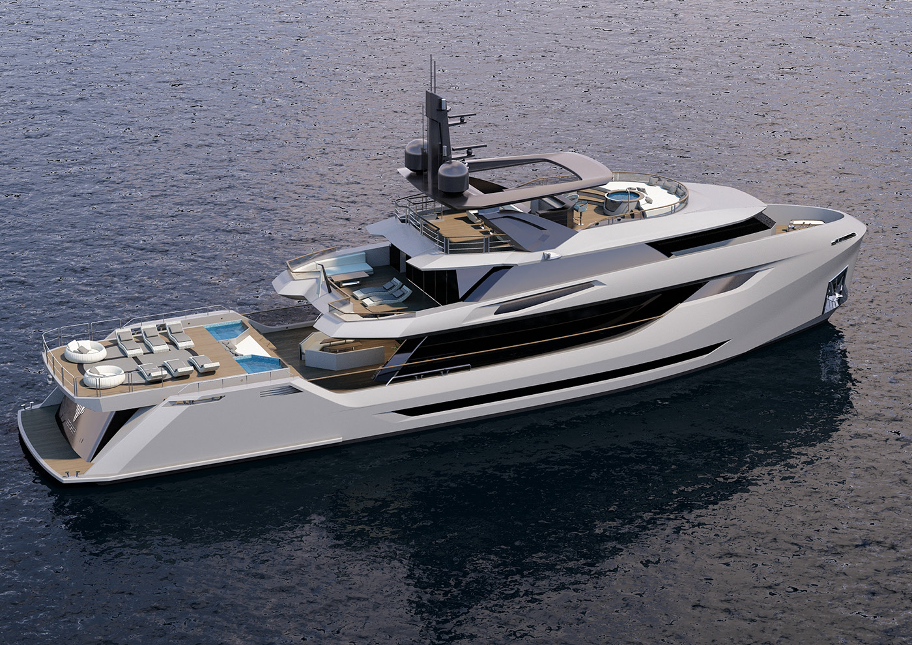

XL-890
- الطول: 84م
- العرض: 12م
- العمق: 6م



معلومات تقنيه
| رقم | وصف الوظائف | الماركه | ملاحظات |
|---|---|---|---|
| (1) | معلومات المحركات تتمتع القوارب المزودة بمحرك خارجي بـ بدن يمكن تنظيفه بالكامل في الجهاز. نفس الشيء ينطبق على جميع أنواع الزوارق البخارية حيث يبرز الدفع/المروحة في المؤخرة، مثل نفاثات الماء، محركات الأقراص السطحية ومحركات المؤخرة القابلة للطي. | تحسين كفاءة استهلاك الوقود تنظيف هيكل القارب الخاص بك سيكون له تأثير فوري على أداء القارب، وتحسين الوقود الكفاءة والسرعة | تعمل أنظمة الغسيل على تنظيف معظم الزوارق البخارية والمراكب الشراعية بدءًا من 6 متر إلى 16 متر حوالي (53 قدم) |
| (2) | يمكن استخدام غسالة الضغط المحمولة على المؤخرة لإزالتها الأوساخ إذا كان يمكن الوصول إليها. الصور السابقة واللاحقة أدناه الإشارة إلى أي جزء من الهيكل يمكن للآلة الوصول إليه وتنظيفه. نظرًا لوجود العديد من أنواع الهياكل والاختلافات الفردية، فإن قد تختلف النتائج | 100% صديق للبيئة، برنامج التنظيف المنتظم سيحافظ على قاربك خالية من الحشف بحيث تكون ضارة بالبيئة يمكن تقليل الدهانات. | قم بالقيادة، والاغتسال، والخروج، كما هو الحال بالنسبة للسيارة، فقط بالنسبة للقارب. في غضون 15 دقيقة يصبح هيكل القارب الخاص بك نظيفًا وتكون جاهزًا للانطلاق |
| (3) | لغسل كامل سطح القوارب الصغيرة والمتوسطة الحجم من 6 أمتار حتى 18 متراً بنظام غسيل القوارب TSI 800. | تبسيط صيانة القارب ووفر على نفسك جهد الكشط، طحن وطلاء القارب سنة بعد سنة. لا مزيد من الاستنشاق مواد مؤذية | يجب ألا يزيد طول العارضة عن 2.3 متر خط الماء إلى أسفل العارضة. |
| (4) | اختر نوع القارب الخاص بك واكتشف ما إذا كان هيكل القارب الخاص بك أم لا يمكن تنظيفها. | العلامة التجارية الجديدة TSI 890 لدينا أيضًا معدات نظام غسيل جديدة ستكون في الخدمة في عام 2024. وهي مخصصة للقوارب واليخوت حتى طول 200 مترًا. | يجب ألا يتجاوز طول العارضة نفسها 1.6 متر (من من أسفل البدن إلى أسفل العارضة) |